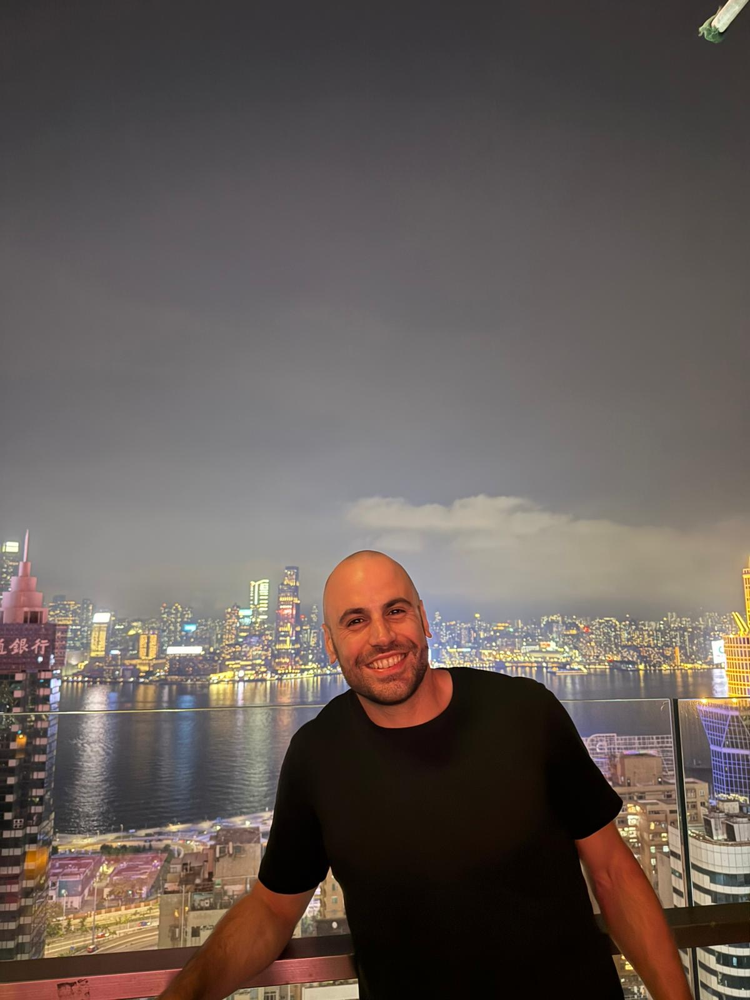

Gianluigi Silvestri
Machine learning researcher
I'm a machine learning researcher, currently wrapping up my PhD at Radboud University. My research focuses on generative models, particularly diffusion models, flow maps and VAEs.
I've worked with teams at Qualcomm AI Research, Sony AI and Sakana AI, exploring different areas of machine learning and generative AI.
I'm currently looking for Machine Learning Scientist or Engineer roles. I'm especially interested in generative models for images, video, music, speech and world models, and their applications in media and entertainment.
Read the blog